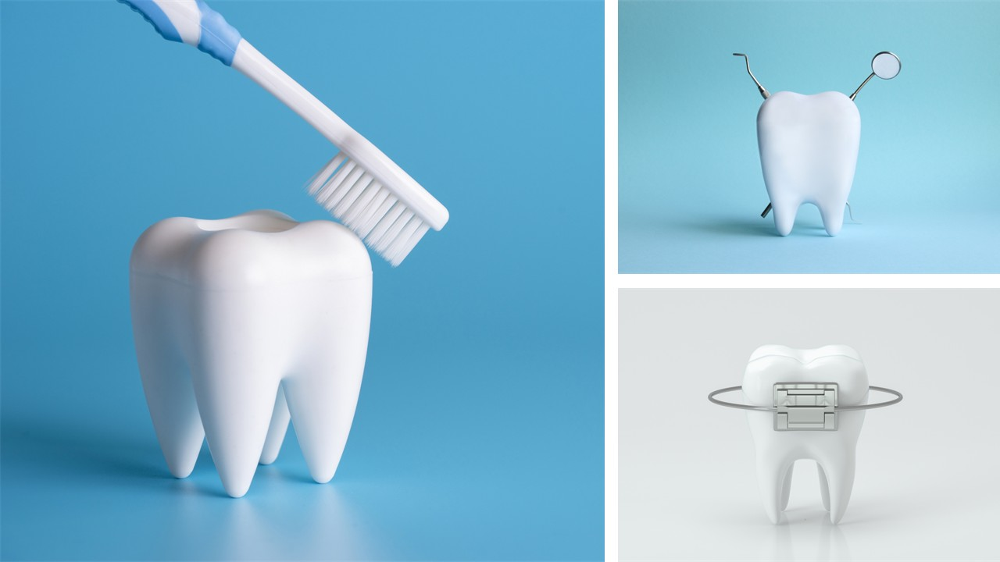

Welcome to my page!
The Instant Assistant was a dental assisting temp agency I owned in early 2010s. I would personally cover other dental assistants who required time off for sick leave, pre-booked vacations or short-notice days off.
My Services
- Specializing in Chairside Dental Assisting
- Registered and insured independent contractor
- Hourly rate, no extra agency fees
- Available Monday to Friday on a "first come, first serve" basis
- Short notice availability for sick days
- Will cover pre-booked short-term Leave of Absences
- Pre-book vacation time

This image was created in my personal paid version of MS PowerPoint.
What does a certified dental assistant do?
A level I dental assistant assists the dentist in chairside dental restoration surgeries, performs patient x-rays. and equipment steriliztion practices.
A level II dental assisitant can do all the same duties as level I, however, they can also do intra-oral tasks like take impressions and coronal polishing
Level II can also perform preventative dental assisting, where we educate patients on nutrition and at-home dental care.
If you want to know more about certified dental assisting, please check out the Ontario Dental Assistants Association.
Thank you for visiting my page!